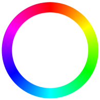

This window may help you understanding the meaning and usage of the objects on the screen.
You can always apply the changes (pressing the button) about  rgb color, light brightness and light tolerence, however the effects will not be visualized in all the modes.
MANUAL MODE
 :OFF /
:ON
:OFF /
:ON
In manual mode you can turn on and off the leds with the light bulb icon. Visualized effects: rgb color, brightness.
AUTOMATIC MODE
:OFF / :ON
In automatic mode the device will turn on the light according
to the value of the lux tolerence bar and the distance from an object.
The lower the value is, the darker it needs to be to turn on the leds.
Clicking on the light bulb icon is useless.
Visualized effects: rgb color, brightness.
COLOR CYCLE MODE
:OFF / :ON
In color cycle mode the leds will change color over time.
You can turn on and off the leds with the
light bulb icon.
Visualized effects: brightness.
HELP

You already know this!